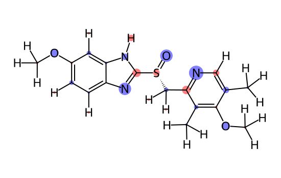
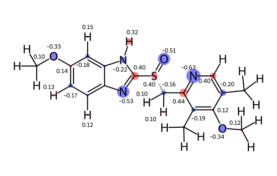
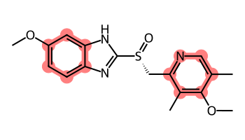
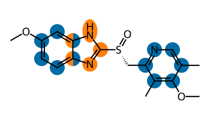
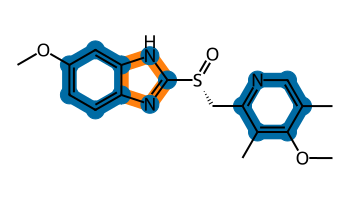
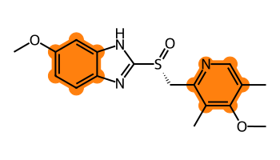

This is a tutorial blog post demonstrating some of the options the RDKit has for highlighting parts of molecules to show additional information.
An older blog post shows a more advanced application: using multiple highlights together with R-group decomposition: https://greglandrum.github.io/rdkit-blog/posts/2021-08-07-rgd-and-highlighting.html
As an example of numeric data I’ll use partial charges calculated using the DASH-props tree populated with AM1-BCC charges. Here’s the paper describing the work: https://doi.org/10.1063/5.0218154 and here’s the github repo: https://github.com/rinikerlab/DASH-tree
Let’s start with the oldest option in the RDKit and the one that is best suited to presenting continuous numerical data, similarity maps:
from IPython.display import SVGd2d = Draw.MolDraw2DSVG(550,350)dopts = d2d.drawOptions()dopts.useBWAtomPalette()SimilarityMaps.GetSimilarityMapFromWeights(esomep_h,charges,d2d,colorMap='coolwarm',alpha=0)d2d.FinishDrawing()SVG(d2d.GetDrawingText())
Notice above that I switched to using a black and white atom palette when doing highlighting. I think this makes everything easier to read and will do it throughout this post.
max(charges),min(charges)
(0.44457, -0.6342717064338059)
An alternate approach: draw the molecule and use distinct atomic highlights (circles/ovals) with a radius proportional to the magnitude of the charge.
maxRad =0.5chargeRadii = {}chargeColors = {}highlightAtoms = []for i,chg inenumerate(charges):# quantize and scale the charge so that we can use it to scale the highlight radii chg = (10*chg//1)/10ifabs(chg)>1e-4: chargeRadii[i] =abs(chg)*maxRad highlightAtoms.append(i)if chg>0: chargeColors[i] = (1,.5,.5)else: chargeColors[i] = (.5,.5,1)d2d = Draw.MolDraw2DSVG(550,350)dopts = d2d.drawOptions()dopts.useBWAtomPalette()# we need to set the highlights to be circles or we'll end up with ovals# that fit around the atomic symboldopts.atomHighlightsAreCircles =True# we need to provide highlightBonds=[] here to avoid having the bonds between highlighted atoms highlighted:d2d.DrawMolecule(esomep_h,highlightAtoms=highlightAtoms,highlightAtomColors=chargeColors,highlightAtomRadii=chargeRadii, highlightBonds=[])d2d.FinishDrawing()SVG(d2d.GetDrawingText())

We can also add the numeric values for the atoms where we’ve drawn circles by setting the atomNote property on those atoms:
molcopy = Chem.Mol(esomep_h)for aid in chargeColors: chg = charges[aid]ifabs(chg)>=0.1: molcopy.GetAtomWithIdx(aid).SetProp('atomNote',f'{charges[aid]:.2f}')d2d = Draw.MolDraw2DSVG(550,350)dopts = d2d.drawOptions()dopts.useBWAtomPalette()dopts.atomHighlightsAreCircles =Trued2d.DrawMolecule(molcopy,highlightAtoms=highlightAtoms,highlightAtomColors=chargeColors,highlightAtomRadii=chargeRadii, highlightBonds=[])d2d.FinishDrawing()SVG(d2d.GetDrawingText())

Highlighting regions of a molecule
Single color
This time we’re going to highlight regions of the molecule that match a substructure
# build a list that has all atoms that match the substructure:matches1 = esomep.GetSubstructMatches(Chem.MolFromSmarts('a1aaaaa1'))highlightAtoms = []for match in matches1: highlightAtoms.extend(match)# and now draw with highlights on those atoms: d2d = Draw.MolDraw2DSVG(350,200)dopts = d2d.drawOptions()dopts.useBWAtomPalette()d2d.DrawMolecule(esomep,highlightAtoms=highlightAtoms)d2d.FinishDrawing()SVG(d2d.GetDrawingText())

Multiple colors
We can also have multiple different highlighting colors.
# rather than trying to guess discernible colors, I will just use # matplotlib's color schemeimport matplotlib.pyplot as pltplt.style.use('tableau-colorblind10')from matplotlib import colors
from collections import defaultdictmatches1 = esomep.GetSubstructMatches(Chem.MolFromSmarts('a1aaaaa1'))color1 = colors.to_rgb('C0')matches2 = esomep.GetSubstructMatches(Chem.MolFromSmarts('a1aaaa1'))color2 = colors.to_rgb('C1')rad =0.4atomHighlights = defaultdict(list)atomRads = {}for (matches,color) inzip((matches1,matches2),(color1,color2)):for match in matches:for aid in match: atomHighlights[aid].append(color) atomRads[aid] = radd2d = Draw.MolDraw2DSVG(350,200)dopts = d2d.drawOptions()dopts.useBWAtomPalette()d2d.DrawMoleculeWithHighlights(esomep,"",dict(atomHighlights),{},atomRads,{})d2d.FinishDrawing()SVG(d2d.GetDrawingText())

We can also just draw the outlines of the highlighted atoms:
rad =0.3atomHighlights = defaultdict(list)bondHighlights = defaultdict(list)atomRads = {}for (matches,color) inzip((matches1,matches2),(color1,color2)):for match in matches:for i,aid inenumerate(match): atomHighlights[aid].append(color1) atomRads[aid] = rad bnd = esomep.GetBondBetweenAtoms(aid,match[(i+1)%len(match)]) bondHighlights[bnd.GetIdx()].append(color)d2d = Draw.MolDraw2DSVG(350,200)dopts = d2d.drawOptions()dopts.useBWAtomPalette()# I think this looks better if we ensure that the atom highlights are always circles:dopts.atomHighlightsAreCircles =Trued2d.DrawMoleculeWithHighlights(esomep,"",dict(atomHighlights),dict(bondHighlights),atomRads,{})d2d.FinishDrawing()SVG(d2d.GetDrawingText())

We can also do that in a more “subway map” style. I will add a third highlight to make it more dramatic.
from collections import defaultdictmatches1 = esomep.GetSubstructMatches(Chem.MolFromSmarts('a1aaaaa1'))color1 = colors.to_rgb('C0')matches2 = esomep.GetSubstructMatches(Chem.MolFromSmarts('a1aaaa1'))color2 = colors.to_rgb('C1')matches3 = esomep.GetSubstructMatches(Chem.MolFromSmarts('Occc[nH]c'))color3 = colors.to_rgb('C2')rad =0.2atomHighlights = defaultdict(list)bondHighlights = defaultdict(list)atomRads = {}for matches,color inzip((matches1,matches2,matches3),(color1,color2,color3)):for match in matches:for i,aid inenumerate(match): atomHighlights[aid].append(color) atomRads[aid] = rad bnd = esomep.GetBondBetweenAtoms(aid,match[(i+1)%len(match)])if bnd isnotNone: bondHighlights[bnd.GetIdx()].append(color)d2d = Draw.MolDraw2DSVG(450,300)dopts = d2d.drawOptions()dopts.useBWAtomPalette()# turn off the highlight fill and ensure circular atom highlights:dopts.fillHighlights =Falsedopts.atomHighlightsAreCircles =Trued2d.DrawMoleculeWithHighlights(esomep,"",dict(atomHighlights),dict(bondHighlights),atomRads,{})d2d.FinishDrawing()SVG(d2d.GetDrawingText())
Here we have to draw the molecule twice: The first time finalizes the scaling of the drawing canvas, then we clear the canvas, draw the polygons that fill the rings, and then draw the molecule a second time on top of the polygons.
from rdkit import Geometry# setup the same way we did before:matches1 = esomep.GetSubstructMatches(Chem.MolFromSmarts('a1aaaaa1'))color1 = colors.to_rgb('C1')highlightAtoms = []for match in matches1: highlightAtoms.extend(match)d2d = Draw.MolDraw2DSVG(350,200)dopts = d2d.drawOptions()dopts.useBWAtomPalette()dopts.setHighlightColour(color1)# draw the molecule to get the atom drawing positions and set the canvas scale:d2d.DrawMolecule(esomep,highlightAtoms=highlightAtoms)d2d.ClearDrawing()# draw the filled rings:conf = esomep.GetConformer()for ring in matches1: ps = [Geometry.Point2D(conf.GetAtomPosition(aidx)) for aidx in ring] d2d.SetFillPolys(True) d2d.SetColour(color1) d2d.DrawPolygon(ps)dopts.clearBackground =False# now redraw the molecule on top of those ring highlights:d2d.DrawMolecule(esomep,highlightAtoms=highlightAtoms)d2d.FinishDrawing()SVG(d2d.GetDrawingText())

As usual, I hope this was useful. Please leave questions, comments, or suggestions in the widget below.